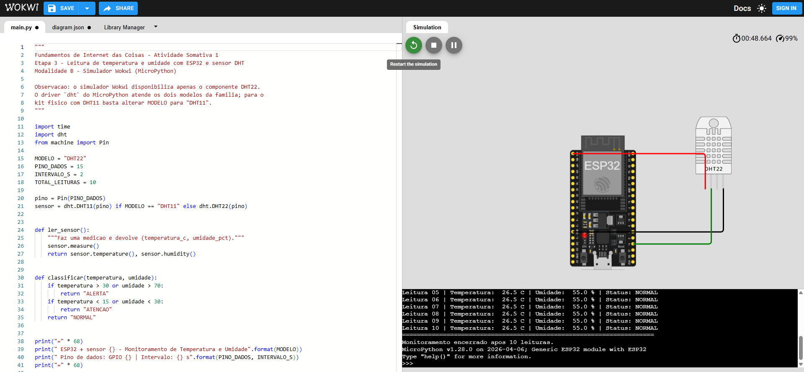

Programar o ESP32 em MicroPython para realizar a leitura periódica dos dados de temperatura e umidade fornecidos pelo sensor digital DHT, exibindo os resultados no console serial.
"""
Fundamentos de Internet das Coisas - Atividade Somativa 1
Etapa 3 - Leitura de temperatura e umidade com ESP32 e sensor DHT
Modalidade B - Simulador Wokwi (MicroPython)
"""
import time
import dht
from machine import Pin
MODELO = "DHT22"
PINO_DADOS = 15
INTERVALO_S = 2
TOTAL_LEITURAS = 10
pino = Pin(PINO_DADOS)
sensor = dht.DHT11(pino) if MODELO == "DHT11" else dht.DHT22(pino)
def ler_sensor():
"""Faz uma medicao e devolve (temperatura_c, umidade_pct)."""
sensor.measure()
return sensor.temperature(), sensor.humidity()
def classificar(temperatura, umidade):
if temperatura > 30 or umidade > 70:
return "ALERTA"
if temperatura < 15 or umidade < 30:
return "ATENCAO"
return "NORMAL"
print("=" * 68)
print(" ESP32 + sensor {} - Monitoramento de Temperatura e Umidade".format(MODELO))
print(" Pino de dados: GPIO {} | Intervalo: {} s".format(PINO_DADOS, INTERVALO_S))
print("=" * 68)
leitura = 1
while leitura <= TOTAL_LEITURAS:
try:
temperatura, umidade = ler_sensor()
estado = classificar(temperatura, umidade)
print(
"Leitura {:02d} | Temperatura: {:>5.1f} C | Umidade: {:>5.1f} % | Status: {}".format(
leitura, temperatura, umidade, estado
)
)
except OSError as erro:
print("Leitura {:02d} | Falha na leitura do sensor: {}".format(leitura, erro))
leitura += 1
time.sleep(INTERVALO_S)
print("=" * 68)
print("Monitoramento encerrado apos {} leituras.".format(TOTAL_LEITURAS))
O sensor foi configurado no simulador com temperatura de 26,5 °C e umidade relativa de 55%. A saída obtida no Serial Monitor foi a seguinte:
==================================================================== ESP32 + sensor DHT22 - Monitoramento de Temperatura e Umidade Pino de dados: GPIO 15 | Intervalo: 2 s ==================================================================== Leitura 01 | Temperatura: 26.5 C | Umidade: 55.0 % | Status: NORMAL Leitura 02 | Temperatura: 26.5 C | Umidade: 55.0 % | Status: NORMAL Leitura 03 | Temperatura: 26.5 C | Umidade: 55.0 % | Status: NORMAL Leitura 04 | Temperatura: 26.5 C | Umidade: 55.0 % | Status: NORMAL Leitura 05 | Temperatura: 26.5 C | Umidade: 55.0 % | Status: NORMAL Leitura 06 | Temperatura: 26.5 C | Umidade: 55.0 % | Status: NORMAL Leitura 07 | Temperatura: 26.5 C | Umidade: 55.0 % | Status: NORMAL Leitura 08 | Temperatura: 26.5 C | Umidade: 55.0 % | Status: NORMAL Leitura 09 | Temperatura: 26.5 C | Umidade: 55.0 % | Status: NORMAL Leitura 10 | Temperatura: 26.5 C | Umidade: 55.0 % | Status: NORMAL ==================================================================== Monitoramento encerrado apos 10 leituras.

A comunicação entre o ESP32 e o sensor DHT foi estabelecida com sucesso pelo barramento digital de um fio no GPIO 15. As dez leituras foram concluídas sem falhas, com os valores correspondendo exatamente aos parâmetros configurados no sensor, o que valida tanto a montagem do circuito quanto a lógica implementada em MicroPython.